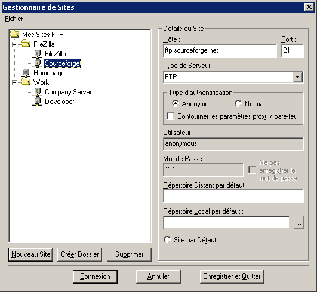

Le Gestionnaire de Sites
Vue d'ensemble:
Le Gestionnaire de Sites prend en charge la liste des serveurs de façon à ce que vous puissiez vous y connecter rapidement. Il enregistre leur adresse et leurs informations de connexion de sorte que vous n'aurez pas à vous souvenir de tous les détails les concernant. FileZilla le fera pour vous.

Contrôles:
Il existe un grand nombre de contrôles pour cette boîte de dialogue. Chacun d'entre eux apparaît dans la liste ci-dessous, accompagné d'une description.
| Liste des sites | - | Affiche tous les sites que vous avez entré dans le Gestionnaire de Sites et les aménage sous forme d'une arborescence. Cliquez sur une entrée pour afficher ou modifier les détails la concernant. Double-cliquez sur une entrée pour vous connectez au site correspondant. |
| Hôte | - | C'est l'adresse du serveur. |
| Port | - | Le port où est localisé le serveur. |
| Type de serveur | - | Vous pouvez choisir ici le type du serveur.
Trois types de serveurs sont habituellement supportés:
|
| Utilisateur | - | Le nom d'utilisateur qui servira à établir une session avec le serveur. |
| Mot de passe | - | Le mot de passe qui servira à établir une session avec le serveur. Sélectionnez Ne pas enregistrer le mot de passe si vous ne voulez pas que FileZilla mémorise votre mot de passe pour le sire concerné. Dans ce cas le mot de passe vous sera demandé à chaque fois que vous voudrez vous connecter à ce site. Utile si vous n'êtes pas le seul à avoir accès à votre machine. |
| Type d'authentification | - | Spécifie de quelle façon FileZilla devra se connecter au serveur. Si vous sélectionnez anonyme, vous ne pouvez entrer ni nom d'utilisateur ni mot de passe. Dans ce cas le nom d'utilisateur est toujours anonyme. Quand vous sélectionnez Normal, vous devez entrer un nom d'utilisateur et si nécessaire, un mot de passe. Quand vous cochez "Contourner paramètres proxy / pare-feu", FileZilla évite toute configuration proxy ou pare-feu que vous avez réglé dans les options. Activer cette option peut être nécessaire si vous voulez vous connecter aux serveurs par votre réseau local LAN. |
| Répertoire distant par
défaut, Répertoire local par défaut |
- | Quand vous vous connectez à un site, FileZilla bascule à la fois sur le répertoire local et distant que vous avez entré ici. |
| Site par défaut | - | Si cette option est sélectionnée, le site concerné dans la liste sera le site par défaut. Ce site sera sélectionné chaque fois que vous ouvrez le Gestionnaire de Site. FileZilla vous connectera également à ce site quand vous utiliserez "Connexion au Site par défaut" à partir du menu de la fenêtre principale. |
| Nouveau Site | - | Crée une nouvelle entrée dans la liste. Remplissez les champs éditables de droite et le nouveau site est prêt à être utilisé. |
| Nouveau Dossier | - | Crée un nouveau dossier dans l'arborescence. Utilisez des dossiers pour regrouper vos sites. |
| Supprimer | - | Supprime les entrées sélectionnées de la liste des sites après vous avoir demandé confirmation. |
| Connexion | - | Vous connecte au site sélectionné et enregistre tout changement. |
| Annuler | - | Ignore tout changement et ferme le Gestionnaire de Sites. |
| Enregistrer et Quitter | - | Enregistre tous les changements et ferme le Gestionnaire de Sites. |
Le menu:
Le Gestionnaire de Sites possède un petit menu à partir duquel vous pouvez importer ou exporter ses entrées.
Vos sites peuvent être exportés de deux façons: comme une simple liste d'URL ou avec tous les détails. Dans les deux cas il vous sera demandé le nom du fichier texte dans lequel vos sites seront exportés. Dans le premier cas, seule l'URL complète (incluant port, nom d'utilisateur, mot de passe et répertoire distant) du serveur seront enregistrés. Dans le second cas, tous les paramètres seront exportés.
Quand vous sélectionnez Importer à partir du menu, il vous sera demandé un nom de fichier. FileZilla détecte automatiquement si le fichier contient des sites et s'il s'agit d'une liste d'URL ou d'une liste détaillée.